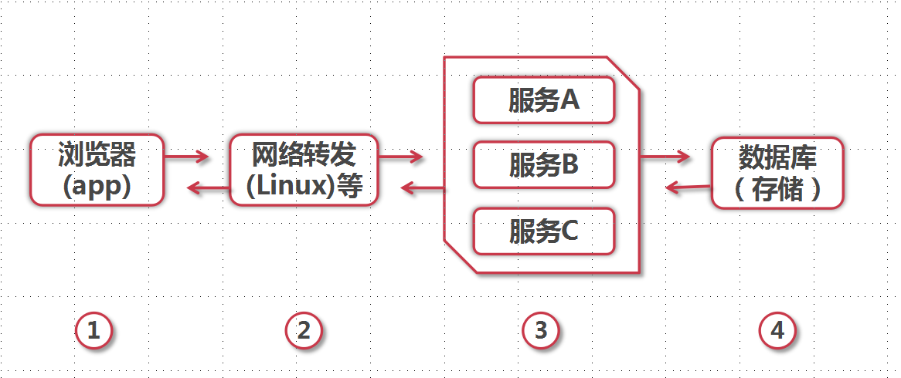
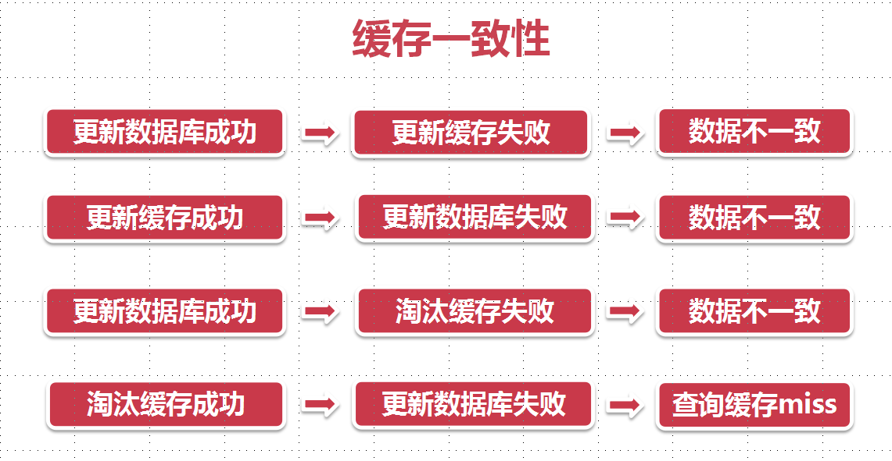
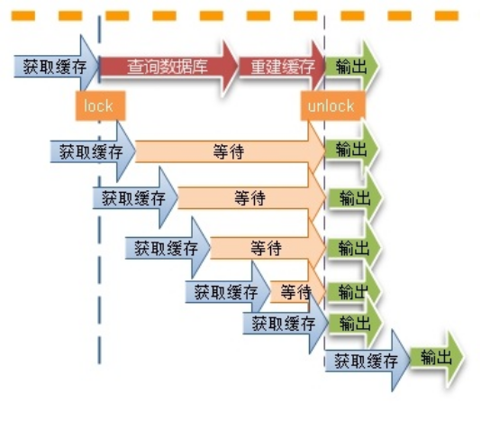
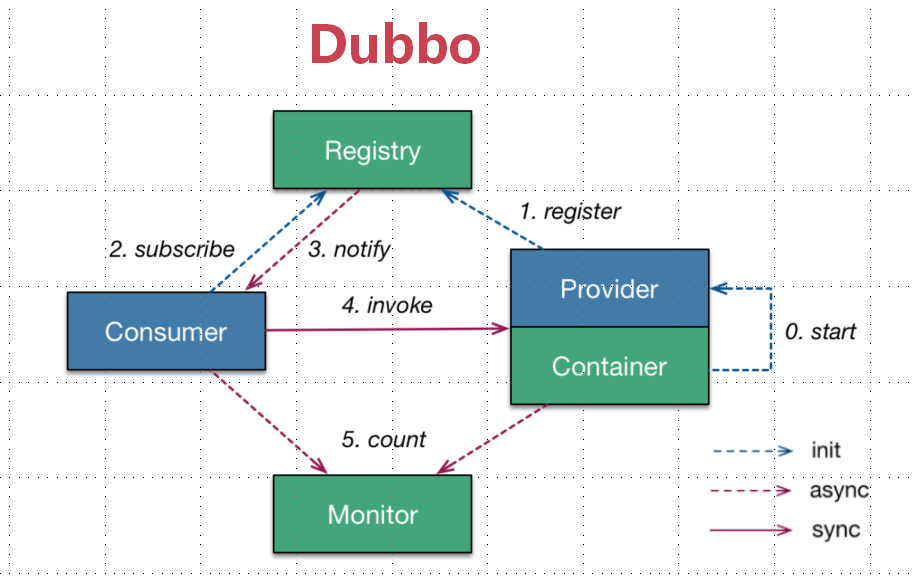

JAVA并发编程与高并发解决方案 - 高并发解决方案
JAVA并发编程与高并发解决方案 - 高并发解决方案
| 版本 | 作者 | 内容 |
|---|---|---|
| 2018.06.26 | huangzuo | 首次发布 |
学习内容简介
本章节主要大概介绍了高并发环境下主要处理思路和手段，能够应对何种高并发环境使用什么样的思路和手段方法。主要思路和手段方法有下面几种:
1.扩容、
2.缓存、
3.队列、
4.拆分、
5.服务降级与熔断、
6.数据库切库、
7.分库分表 etc.
Jimin https://www.imooc.com/t/5980627#Article 手记
扩容
垂直扩容(纵向扩展):提高系统部件能力。对单个服务器，提高cpu速度或者增加内存、存储空间等。但单个服务器扩容能力是有限
水平扩容(横向扩容)：增加服务器
缓存
服务器和数据库的资源是有限的，如何使用有限的资源支持更多的吞吐量，一个有效的方法是使用缓存，下面四个环节都可以使用缓存中的数据，从而减少对服务器的访问和计算量，提高并发量
用户通过浏览器访问网站，主要路径有:下面图四个节点，每个节点都有缓存，这里只是描述服务端和数据库的缓存

缓存特征
缓存数据是从数据库中取的部分数据，缓存中的数据是有限，并有时间等限制，还要保持缓存中的数据和数据库中数据的一致性，所以不得不关注缓存中的一些特征
1、命中数:在缓存中能查到数据，不用到数据库查找
2、没有命中数:在缓存中查不到到数据，要到数据库查找，可能是因为缓存中根本不存在或者过期等
3、命中率:命中数/(命中数+没有命中数)
命中率越高表示使用缓存的收益越高， 应用性能越好，响应的时间越短，吞吐量会变得越高，抗并发的能力也越强，在高并发的互联网环境中，缓存命中率至关重要
4、最大元素(空间):代表着缓存可以存放最大元素的数量，一旦缓存中元素数量超过这个值，缓存中的数据超过了支持最大的空间，将会触发缓存清空策略，根据不同的场景设置合理的最大值，能提高缓存命中率
当最大空间值用满，如何保证在稳定服务同时，提高命中率
5、清空策略
FIFO:先进先出,在缓存最大空间值用满，根据创建时间，最先创建的缓存，会被清出去，在数据保持实时性环境下可以使用
LFU:最少使用策略，无论是否过期，根据最少用次数的数据被清空，在高频数据场景下使用
LRU:最近最少策略，无论是否过期，最近时间，最少用的被清空，在热点的时间环境下使用，保存热点的缓存
过期时间：设置过期时间清空策略
随机：随机策略etc
一般缓存清空策略使用LRU
缓存命中率影响因素
1、业务场景和业务需求：写少读多业务场景，实时性要求越低，越适合缓存，缓存时间越长，命中率越高，互联网大多数应用都适合缓存
2、缓存的设计(粒度和策略):粒度越小缓存命中率越高，粒度:数据类型-单个对象或者集合，缓存单个对象命中率比集合高，缓存的更新策略影响命中率，当数据发生变化时，直接更新数据比移徐和让缓存过期命中率更高，系统复杂度会变得更高
3、缓存容量和基础设施:缓存容量越高，命中率越高，分布式缓存比单个应用内置缓存命中率高，考虑系统容量规划、是否扩展，不同中间件和框架效率和稳定性存在差异
4、当缓存发生故障时，需要避免缓存失效，并最大程度降低影响，通过一致性hash算法或者节点冗余提高高可用避免这个问题
4、并发越高，缓存的命中率就越高
提高缓存命中率
从架构师的角度，应用尽可能通过缓存获取数据，并避免缓存失效，需要从业务需求，缓存粒度，缓存策略，技术选型各个方面综合考虑权衡。尽可能高频访问，时效要求不高的热点任务
缓存分类和应用场景
本地缓存:应用中的缓存组件，编程实现(成员变量，局部变量，静态变量) Guava Cache
优点：应用和cache在同一个进程内部，请求缓存非常快速，没有过多的网络开销，在单应用中不需要集群支持下、无需互相通知情况下，使用本地缓存比较合适
缺点：多个应用无法共享缓存，各节点都需要维护单独的缓存，对内存是一种浪费
分布式缓存：Memcache 、redis
高并发场景下缓存常见的问题
缓存一致性
当数据时效很高的场景下，需要保证缓存中的数据和数据库的数据一致性、缓存节点和副本保持一致性，不能出现差异现象，比较依赖缓存的过期和更新策略，数据库数据发生更改主动更新缓存中的数，或者移徐对应的缓存，这时候可能出现缓存问题

缓存并发问题
缓存过期后，将尝试从后台数据库获取数据，在高并发场景下有可能多个请求并发去从数据库获取数据，对数据库造成极大的冲击，甚至导致雪崩的现象。当缓存某个key在被更新时，同时也可能大量被获取，导致数据一致性
解决方式:锁的机制，在缓存更新或过期的场景下，先尝试获取锁，获取数据库的数据，其他的请求只需要等待一点时间

缓存穿透(击穿)问题
在高并发场景下，如果缓存中的某个key，被高并发的访问，没有命中，出于对容错性考虑，会尝试从后端数据库获取数据，导致大量的请求到达数据库，而当该key对应的数据为空的情况下，导致数据库产生很多不必要的查询操作，从而导致了巨大的冲击和压力
避免这种情况:
1、缓存空对象、或者空集合，避免请求穿透到后台，同时也要保持时效性，这个适合命中率不高，但可能被频繁访问的数据
2、单独过滤处理，对所有可能对应数据为空的key进行统一的存放，在请求前统一拦截，这样避免请求穿透到后台数据库，比较适合命中率不高，但是更新不频繁的数据

缓存的雪崩现象
缓存颠簸问题：比雪崩更轻微的故障，但是在一段时间内，对系统也会造成冲击和性能影响，一般由于缓存节点故障导致，解决方法：通过一致性hash算法
缓存雪崩现象:由于缓存原因，导致大量请求到达后台数据库，从而导致数据库发生崩溃、系统发生崩溃
原因：缓存并发、缓存穿透、恶意攻击等。某个时间点内，系统预加载的缓存，周期性集中失效也有可能导致雪崩
解决方式:要设置不同的缓存过期时间，避免缓存集中失效。通过限流，降级，熔断等手段降低影响，通过多级缓存避免这种雪崩灾难，多加强压力测试，尽早发现问题

队列
高并发之消息队列，企业IT系统内部通讯手段
短信发送场景：开始发送短信请求流程A-发送消息A1到队列-消息A1被处理-反馈消息A1处理结果到数据库。消息队列中可以设置发送短信速度和发送失败重发机制等,
好处:
* 异步解耦，短信发送过程不需要关注，直接执行发送短信之后的事情
* 保持最终一致性，保证最终发送给用户，只是不是那么及时
* 假如发送完成短信还要发送邮件。有消息队列,不需要同步等待，直接并行处理，让核心流程更快结束,增强业务系统异步处理能力，减少甚至机乎不可能出现的并发现象

消息队列的特性
业务无关：不需要考虑上层业务模型，只做消息分发，上层不同业务模块反而要依赖消息队列定义的规范进行通信
FIFO:先投递先到达
容灾：节点的动态增删和消息的持久化
性能方面：吞吐量提升，系统内部通讯效率提高
为什么需要消息队列
- 生成和消费的速度或稳定性等因素不一致。例如:业务系统触发发送短信的申请，但是短信发送模块速度跟不上，需要将来不及处理的消息暂存在队列里面，缓存压力，，消息发送模块就可以慢慢从消息队列里获取消息进行处理
消息队列的好处
业务解耦：最本质问题，一个事物只关心核心流程，需要依赖其他系统但不是那么重要事情，有通知即可，不需要等待结果。基于消息模型关心通知，不是处理
最终一致性：俩个系统状态保持最终一致性，要么成功，要么失败，一定的延迟达到最终一致性。成功、失败、不确定
广播:只关心把消息发送到队列，每当有新的业务方接入，只需要接入到队列，不需要重新调试，接入方自己处理即可
错峰与流控: 转储俩个系统之间通讯的内容，等下游系统有能力处理这些消息，再处理消息，比如:大量用户访问网站请求，数据库一时处理不来那么多请求，可先把数据缓存在消息队列
消息队列场景
消息队列不是万能的，对于需要强事物保证、而且延迟很敏感的，RPC远程调用优于消息队列
对于一些无关痛痒，对于别人很重要，对自己不是那么关心的事情，可以使用消息队列
支持最终一致性的消息队列能够用来处理延迟不那么敏感的分布式事物场景
上下游系统处理能力存在差距的时候，利用消息队列做通用的漏斗，在下游有能力处理的时候，再进行分发，同时如果下游有很多系统关心上游发出的消息,使用消息队列的广播
队列-kafka

kafka：高性能、跨语言、分布式发布订阅消息队列系统
特性:
- 快速持久化
- 高吞吐
- 分布式
定义
broker：集群上一个或者多个服务器，服务器称为broker
topic:每条发布到kafka集群消息都有一个类别，这个类别就是topic，物理上不同topic消息是分开存储，一个topic逻辑上保存在一个或多个broker上，但用户只需指定topic就可以生产消费数据，不关心数据存储在那里
partition:物理上的概念，每一个topic包含一个或者多个partition
producer:负责向kafka集群发送消息
comsumer:负责消费kafka集群的消息
comsumer-group:多个comsumer属于一个comsumer-group
流程：producer 根据partition算法，将消息发布到指定的partition上面，kafka集群接受到producer发过来的消息之后，将消息持久化到硬盘，并保留消息指定时长，producer不关心消息是否消费，comsumer从kafka集群获取数据，并控制消息的offset(0,1,2) ，comsumer每消费一个消息offset加一，comsumer能控制offset，消息的状态是由comsumer控制，comsumer可以跟踪、重设offset值,comsumer可以任意读取不同offset位置的值
队列-RabbitMQ
定义
l、Exchange:消息先发到Exchange，处理完决定怎样，发送到Queue，Exchange和Queue是多对多关系
2、Client(producer)发送消息到Exchange
3、Queue:消息队列，Exchange发送消息到Queue
4、Client(cosumer)从Queue消费消息
应用拆分
单个服务器再优化，处理能力是有上限的，将一个应用拆分成多个系统应用，多部署几台服务器
比如股票系统：用户信息、开户、股票、行情、交易、订单…用户不同时间段访问的功能频率差别很大，拆分如下几个系统-交易中心、账户中心、用户中心、行情中心、通知中心
应用拆分基本原则
业务优先:每个系统都会安装业务分成多个模块，每个模块有包含多个业务相关的功能，在系统拆分时，优先考虑按照业务边界拆分
循序渐进:边拆分边测试
兼顾技术：重构、分层
可靠测试
应用拆分思考
1、应用之间的通信:RPC（dubbo等）、消息队列、restful
2、应用之间数据库设计:每个应用都有独立的数据库，共同的数据可以放到common数据库中
3、避免事务操作跨应用，分布式事务消耗资源，尽量避免事务操作，降低应用之间的耦合度，应用之间要互不影响
应用拆分组件
服务化Dubbo

流程:
1、初始化:provider-start启动，通过register向registry注册服务(zookeeper)，consumer -subscribe向registry中心订阅服务，不断尝试订阅直到订阅到服务，provider对于consumer是透明的，consumer多次请求相同的服务，可能由不同的provider提供,实现了软负载
2、producer 注册了新的服务，通过notify通知到consumer
3、monitor:通过异步监控，可选，需要单独配置，不影响服务调用
4、consumer通过invoke调用producer接口
微服务
微服务是架构概念，将功能分解在各个离散的服务中，以实现对解决方案的解耦，并提供更加灵活服务支持，微服务把一个大型单个应用程序和服务拆分成数个甚至数十个支持的微服务，可扩展单个组件，而不是整个应用程序堆栈从而满足服务等级协议，微服务是围绕业务领域组件创建应用，这些应用可以独立开发、管理、迭代，在分摊的组件中使用云架构和平台部署和管理服务，使产品交付变得更加简单，微服务使用功能比较明确、业务比较精炼的服务解决更大更实际的问题

微服务:独立的服务共同组成整个系统，每个服务单独部署，每个服务跑在自己的进程中，每个服务为独立业务开发，分布式管理，非常强调隔离性
微服务标准
1、分布式服务组成的系统
2、按照业务而不是技术划分组织
3、有生命的产品而不是项目
4、强服务个体，弱通信
5、自动化运维
6、高度容错
7、可以快速演化、迭代
微服务要解决的问题
1、客户端如何访问不同的服务？按功能拆分成独立服务，跑在独立的虚拟机上，是独立的java进程，客户端如何去访问，后台n多个服务?API Gateway 代理统一提供服务入口,让微服务对前台透明，同时可以聚合后台服务，提供安全、过滤、流控api等管理功能
2、每个服务之间如何通信？
异步:消息队列(kafka)
同步:一致性强，容易出现一些调用问题，特别是调用层次多的时候，有俩种同步方法：RPC、rest
RPC-比如dubbo，传输协议更高效，安全更可控，特别在一个公司内部，如果有统一的开发规范和统一的服务框架，开发效率就会更加明显
rest-比如spring boot,一般rest基于http更容易实现也更容易被接受，服务端实现技术也更灵活些，各个语言也能支持，同时能跨客户端，对客户端没有特殊要求，主要封装了http的apk就能调用，所以使用相对广些
3、如此多的服务如何实现？在微服务架构中，一般每个服务都是有多个拷贝作为负载均衡，一个服务可能随时下线，也可能应对临时增加访问的压力，临时增加新的服务节点，服务之间如何感知，如何管理，这是服务发现的问题，基本上是通过zookeeper等类似技术做注册等信息分布式管理，服务上线时，将自己的信息注册到zookeeper上，通过心跳维持常连接，实时更新那些信息，服务调用者通过zookeeper寻址，根据定制的算法，找到服务，还可以将服务的信息缓存在本地，提高性能，当服务发现时，zookeeper会通知服务客户端
4、服务挂了，怎么办？分布式网络是不可靠的，通过微服务拆分能降低风险，不过没有特别的保证，结局是很惨，相关手段:重试机制、应用的限流、熔断机制、负载均衡、系统降级等
应用限流
限制一段时间内的应用流量，控制某段时间内某段代码被执行的次数
比如某段时间突然有130w~140w 的数据插入到数据库导致的后果
1、网络的开销，很可能直接把带宽打满，导致其他请求无法正常传输和处理
2、数据库负载突然增高，导致无法处理某些数据库操作，也可能出现没有足够的连接，导致某些数据插入失败或者查询失败
3、数据库做了主从设计，插入到主库的数据还要同步到从库数据，这时瞬间插入大量的数据，会导致主库和从库延迟特别大，这时通过从库查询到的数据不准确的概率也会跟着提升
通过特殊的手段限流放慢插入数据库的手段，会怎么样？？
比如：以恒定的速率，每秒400条速率插入主库，正常同步
限流
1、限制总并发数
2、限制瞬时的并发数
3、限制时间窗口内的平均速率etc
限流的算法:
- 计算器法
对应A接口，每一分钟访问的次数不能超过100次
问题:只是限制0~1、1~2访问100次，出现了边界问题，比如0:59~1:01之间次数出现可能超过100次
滑动窗口法
滑动窗口法是计算器法进化，0~1分为小6格，每格10秒钟，每过完一格，0~1向前滑动一小格，每次都会计算当前格和已经执行的5格次数总数是否超过100次，一直在向前面滑动。当前的10秒钟的访问的次数和已经访问的50秒钟的访问的次数加起来不能超过100次

漏桶算法

无法预计桶留进来的水有多少，也不法预计留进来的水速度有多快，但是可以控制流出去的水的速率，桶满以后多余的水会溢出去，漏桶算法限制了请求的速度，使用漏桶算法，可以保证接口会以一个恒定的速率来处理请求令牌桶算法

固定容量的桶，桶里面放着令牌，桶一开始是空的，令牌以一定的速率往桶里面填充，知道达到桶的容量，多余的令牌会被丢弃掉，当一个请求过来，会从桶里面移除一个令牌，如果没有令牌请求无法通过，有令牌请求就可以继续执行。允许流量的突发，下次突发，需要填充满桶
服务降级与熔断
服务降级
比如:12306抢票，在抢票高峰的时候，明明票还有，但是查询出来的列表确是空的，等高峰过后，再来查询列表恢复正常。高峰查询过程中出现的问题，要么超时、要么网络问题导致查询失败，这里很可能采用了服务降级处理，呈现给用户的并不是系统内部出错提示而是空的列表
服务降级含义:当服务器压力巨增的时候，根据当前业务情况及流量，对一些服务、页面有策略的降级，以处缓解服务器资源的压力，以保障核心任务正常运行，同时也保障了部分甚至大部分客户得到正确的响应。服务降级技术上来说是：如果当前请求处理不了或者出错，给一个默认的返回。整体资源不够了，忍痛将某些服务关闭，等度过高峰期再开启
服务降级分类
自动降级:超时、失败数次、故障、限流
超时:配置好超时时间和超时重制次数机制，并使用异步机制探测恢复情况 失败次数：一些不稳定的API，当失败调用的次数达到一定的值之后，自动降级，同样使用异步机制探测恢复情况 故障:比如远程服务挂掉了，可能是网络故障、DNS故障、http服务返回错误状态码，RPC返回抛出异常等，这时服务直接降级 限流：当访问量达到限制点的时候，后续访问会被降级，返回的信息可以是,排队页面\无货、错误页等等
人工降级:秒杀、双11大促等
手动设置，将某些服务降级，以保障在某段时间内系统核心服务的正常运行，通常在代码里面做开关控制
服务降级的处理方案:
默认值：比如库存服务挂了，返回默认现货
兜底数据：广告挂了，返回提前准备的静态页面
缓存:一般使用之前暂时缓存的数据
服务熔断
软件系统由于某些原因，使得服务出现过载的现象，为了防止造成整个系统故障，从而采用一种保护策施，可称为过载保护
服务降级和服务熔断
共性:目的、最终表现、粒度、自治
区别:
触发原因:服务熔断-指某个服务特别是下游服务发生故障引起的。服务降级-整体负荷考虑的
管理目标层次:熔断-框架级别的处理，每个微服务都需要，降级-需要对业务有层级之分，都是从最外围开始的
实现方式:服务熔断是服务降级的一种实现
服务降级要考虑的问题
那些服务是核心服务，那些服务是非核心服务
那些服务是否支持降级、降级策略
业务放通场景、策略
Hystric 类帮助服务降级、熔断
提供失败回退(Fallback)和优雅的服务降级机制
提供近实时的监控、报警和运维控制手段
在分布式系统中，外部用户发起请求访问服务器，服务依赖第三方资源，由于第三方发生故障，导致请求发生问题，我们避免不了导致调用第三方失败的原因，但我们尽可能避免调用第三方依赖失败造成的影响，提前做好应急措施，遇到问题可以及时启动应急预案，让系统自我调节。如果不能及时有效隔离有问题第三方依赖，因为这个单点故障而阻塞，产生雪崩的效益，整个应用服务器将不能正常对外提供服务
数据库切库、分库、分表
数据库瓶颈
1、单个库数据量太大(1T~2T)：多个库
2、单个数据库服务器压力过大、读写速度瓶颈：多个库、读写分离
3、单个表数据量过大：分表，大表拆分多个小表
数据库切库
大多数采用读写分离技术，一个主库多个从库，主库负责数据更新、实时查询，从库负责非实时数据查询，实际数据库都是读多、写少，读取数据通常耗时比较长，占用CPU比较多,多个从库采取负载均衡，有效减轻主库的压力，把数据分发到从库可保持系统的健壮性
如何方便使读写分离
直接定义多个数据库连接
1、动态数据源切换-切库，在程序运行时，把数据源植入到程序中，让指定的程序选择连接主库还是从库操作，主要技术：spring aop 、注解等
2、自定义注解完成数据库切库-代码实现，网址 https://www.imooc.com/article/22556
数据库支持多个数据源与分库
共同点:底层多个数据库提供服务
不同点：
分库：在应用拆分时，每个应用对应一个数据库
多个数据源:一个应用对应多个数据库
多个数据源的轻松支持手记:https://www.imooc.com/article/22609
数据库分表
什么时候考虑分表：当一个表数据量很大，大到我们做了sql优化、索引，基本的操作速度慢到影响使用，要预先考虑分表
分表好处:
1、分表后，单表的并发能力提高了，磁盘IO性能也提高了，写操作效率也会跟着提高
2、查询一次时间变短，数据发布在不同文件，磁盘IO性能会跟着提高，同时读写锁影响的数据量变少，，插入数据库数据需要重新建立的索引的数据变少
分表策略
横向(水平)分表与纵向（垂直）分表
横向(水平)分表
把大的表结构横向切割为同样结构的不同的表，表结构是完成一样根据某些规则划分表的数据，比如根据id\表数量 取模把数据平均划分到不同的表上
纵向（垂直）分表
将本来可以在一张表的内容，人为划分为多个不同的表，通常根据数据的活跃度进行分离，因为不同活跃的数据，处理方式是不同的
数据库分表:mybatis 分表插件 shardbatis2.0-手记
高可用一些手段
任务调度系统分布式：elastic-job+zookeeper,无中心化的分布式定时调度框架，基于数据库高可用方案，数据库没有分布式协调功能
主备切换：apache curator+zookeeper 分布式锁实现
监控报警机制-看手记
坚持原创技术分享，您的支持是我前进的动力！